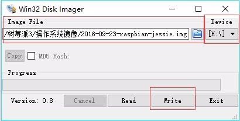

树莓派环境搭建(一)
NFS
工作环境：ubuntu20.04
一、搭建交叉编译器
git clone git://github.com/raspberrypi/tools.git
cd tools
cp -r arm-bcm2708 /home/installed/opt/
# 配置路径
sudo vim ~/.bashrc
export PATH=$PATH:/home/installed/opt/arm-bcm2708/gcc-linaro-arm-linux-gnueabihf-raspbian-x64/bin
#export PATH=$PATH:/home/installed/opt/arm-bcm2708/arm-bcm2708hardfp-linux-gnueabi/bin
export CFLAGS_RASP="-O2 -pipe -mcpu=arm1176jzf-s -mfpu=vfp -mfloat-abi=hard -w"
# 安装32位兼容库
sudo apt install lib32ncurses6 lib32ncurses-dev
# 测试
arm-linux-gnueabihf-gcc -v
二、安装系统
在win下面使用Win32DiskImager软件，将网上下载的镜像的镜像烧写到SD卡中。 
1. 开机启动配置
树莓派的图形界面需要账户密码登录之后才能进去，这样不方便QT程序的运行，因此需要开启开机自动运行。
修改sudo nano /etc/systemd/system/getty.target.wants/getty@tty1.service
# 修改
# ExecStart=-/sbin/agetty -o '-p -- \\u' --noclear %I $TERM
ExecStart=-/sbin/agetty --autologin pi --noclear %I $TERM
2. 网络配置
传统的树莓派都是采用有线网络和无线网络进行宿主机和目标机之间的通信，树莓派最新的系统中自带了usbnet，可以进行宿主机与目标机通信，并且通过宿主机(ubuntu)的路由转发可以访问外网，进行软件更新，但是usbnet没有默认开启，需要在配置文件中开启。 开机自启后使用串口登录，进入系统。
cd /boot
sudo nano cmdline.txt
# 添加
modules-load=dwc2,g_ether。
# end
sudo nano config/txt
#添加
dtoverlay=dwc2
# end
sudo nano /etc/network/interfaces
#添加
auto usb0
iface usb0 inet static
address 192.168.4.100
netmask 255.255.255.0
gateway 192.168.4.1
usbnet连接之后，便会在ubuntu系统下生成一个网卡，但是该网卡的名称并不固定，每次连接都会发生变化，因此不能设置静态ip，并且在设置该网络的ip地址后，该ip还会经常掉线，为此专门编写一个脚本用来监控该网卡。
'''
Author: your name
Date: 2020-12-12 13:31:12
LastEditTime: 2020-12-12 14:10:02
LastEditors: Please set LastEditors
Description: In User Settings Edit
FilePath: /home/luocang/workspace/00shell/01makeusbnet/py_usbnet.py
'''
import sys,os,shutil,re,time
from subprocess import Popen, PIPE
def start_usbnet():
os.system('sudo iptables -F')
os.system('sudo iptables -P INPUT ACCEPT')
os.system('sudo iptables -P FORWARD ACCEPT')
os.system('sudo iptables -t nat -A POSTROUTING -s 192.168.4.100 -o wlp3s0 -j MASQUERADE')
def getIfconfig():
p = Popen(['ifconfig'], stdout = PIPE)
data = p.stdout.read().decode().split('\n\n')
return [i for i in data if i and not i.startswith('lo')]
def get_name(dev):
line = dev.split('\n')[0]
name = line.split(':')[0]
# print(name)
return name
def get_addr(dev):
addr = re.findall( r'inet (.*?) ' , dev, re.M|re.I)
# print(addr)
return addr
def set_ipaddr():
if_list = getIfconfig()
for dev in if_list:
if(dev.startswith('enx')):
net_name = get_name(dev)
net_addr = get_addr(dev)
if(net_addr == []):
# print('sudo ifconfig %s 192.168.4.1' % (net_name))
os.system('sudo ifconfig %s 192.168.4.1' % (net_name))
def main():
start_usbnet()
while(True):
time.sleep(2)
set_ipaddr()
if __name__ == "__main__":
main()
在连接网络后，便可以后台运行该程序。
# 宿主机
python3 /home/luocang/workspace/00shell/01makeusbnet/py_usbnet.py &
ping 192.168.4.100
3. NFS
在树莓派的用户目录下编写nfs的挂载脚本
cd /home/pi
mkdir 00shell
cd 00shell
nano nfs.sh
#添加
#!/bin/sh
sudo mount -t nfs -o nolock 192.168.4.1:/home/luocang/workspace /mnt
#end
chmod +x nfs.sh
./nfs.sh
4. SSH
树莓派默认开启了ssh登录，修改以下配置
sudo nano /etc/ssh/sshd_config
#修改
#PermitRootLogin prohibit-password
PermitRootLogin yes
开启上电自启动ssh服务器
sudo nano /etc/profile
# 添加
sudo service ssh restart
重启树莓派，然后在宿主机便可以采用ssh登录：
ssh pi@192.168.4.100
5. 换源
树莓派默认的源比较慢，更换为国内源会更快一点。
sudo nano /etc/apt/sources.list
#修改为
deb http://mirrors.ustc.edu.cn/raspbian/raspbian/ stretch main contrib non-free rpi
sudo nano /etc/apt/sources.list.d/raspi.list
#修改为
deb http://mirrors.ustc.edu.cn/archive.raspberrypi.org/debian/ stretch main ui
三、交叉编译qt
1. 编译(在宿主机)
不带tslib
# 之前在安装qt软件的时候便已经安装了源码，因此不需要再额外下载源码
cd /home/installed/Qt5.9.9/5.9.9/Src/
# 建立编译脚本
subl mkrasp0.sh
## 脚本
#!/bin/sh
./configure -verbose \
-prefix /home/installed/opt/qt_rasp0 \
-device-option CROSS_COMPILE=bcm2708hardfp- \
-confirm-license \
-opensource \
-release \
-make libs \
-device linux-rasp-pi-g++ \
-optimized-qmake \
-pch \
-no-sql-sqlite \
-no-sqlite \
-qt-libjpeg \
-qt-libpng \
-qt-zlib \
-no-tslib \
-no-opengl \
-no-sse2 \
-no-openssl \
-no-cups \
-no-glib \
-no-dbus \
-no-xcb \
-no-iconv \
-no-separate-debug-info \
-no-qml-debug \
-skip qtdoc \
-skip qtquick1 \
-skip qtquickcontrols \
-skip qtscript \
-skip qtxmlpatterns \
-skip qtactiveqt \
-skip qtwebsockets \
-nomake examples \
-nomake tools \
-nomake tests
#编译
chmod +x mkrasp0.sh
./mkrasp0.sh
make -j12
sudo make install
2. 安装(在树莓派)
# 宿主机，进NFS目录下
mkdir 01lib
cd 01lib
mkdir fonts
cp -r /home/installed/opt/qt_rasp0/lib/ ./
cp -r /home/installed/opt/qt_rasp0/plugins/ lib
cp /usr/share/fonts/truetype/*/* fonts
# 树莓派
cd /home/pi
cp -r /mnt/01lib ./
sudo nano /etc/profile
export LD_LIBRARY_PATH=/home/pi/00lib/lib
export QT_QPA_PLATFORM_PLUGIN_PATH=/home/pi/00lib/lib/plugins
export QT_QPA_PLATFORM=linuxfb:fb=/dev/fb0
export QT_QPA_FONTDIR=/home/pi/00lib/fonts
四、交叉编译wiringpi
1. 下载 & 编译(在宿主机)
# 下载库
git clone https://github.com/WiringPi/WiringPi.git
# 修改makefile
cd WiringPi-master/wiringPi
vi Makefile
# 修改：
CC = arm-linux-gnueabihf-gcc
# 编译
make
sudo make install
# 宿主机，进NFS目录下
cd 01lib
cp /usr/local/lib/libwiringPi.so.2.60 libwiringPi.so
2. 安装
# 在树莓派
cp /mnt/libwiringPi.so /home/pi/00lib/lib/
sudo nano /etc/profile
export LD_LIBRARY_PATH=/home/pi/00lib/lib
3. 使用
在QT使用
LIBS += -L/usr/lib -lwiringPi
INCLUDEPATH += /usr/local/include